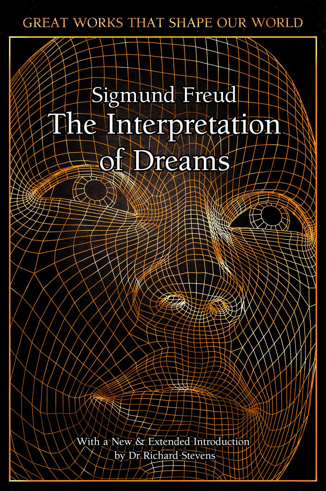
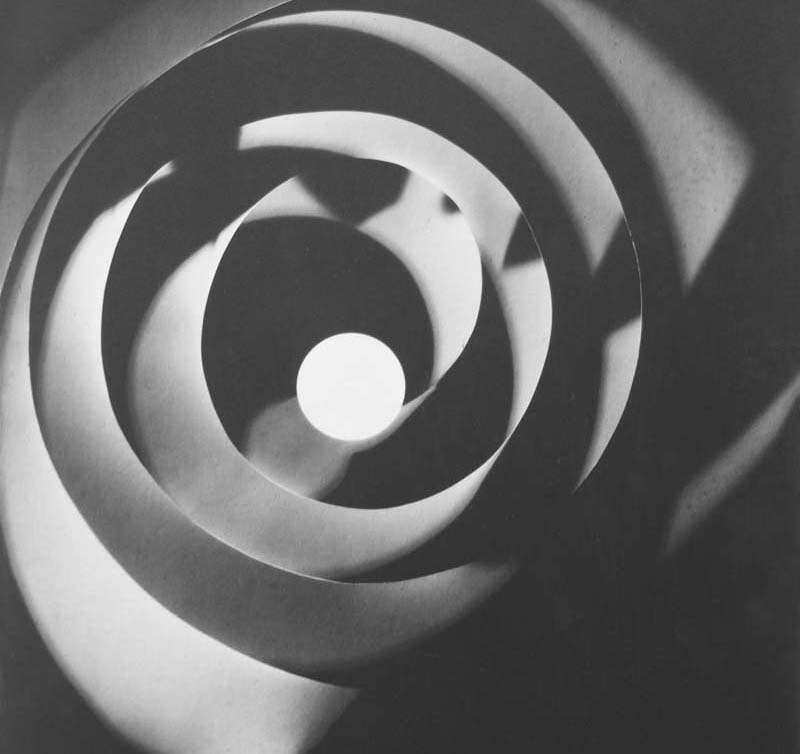
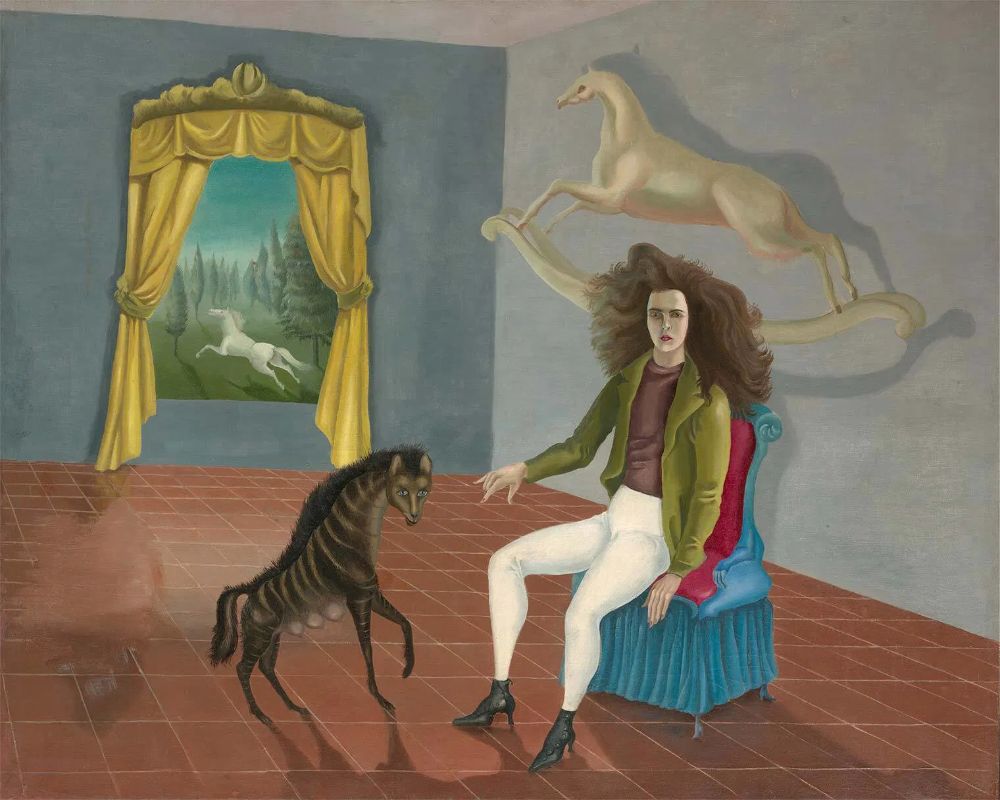

Archivo
Material académico, fuentes primarias y enlaces de investigación sobre el surrealismo.
-

Primer Manifiesto Surrealista
Definición del automatismo psíquico y programa del movimiento.
Ver recurso → -

La interpretación de los sueños
Base conceptual para el interés surrealista por el sueño y el deseo.
Ver recurso → -

Rayografías de Man Ray
Rayografías y solarización como expansión poética del medio.
Ver recurso → -

Leonora Carrington — Obras y textos
Imaginarios míticos y metamorfosis; figura clave del surrealismo.
Ver recurso →